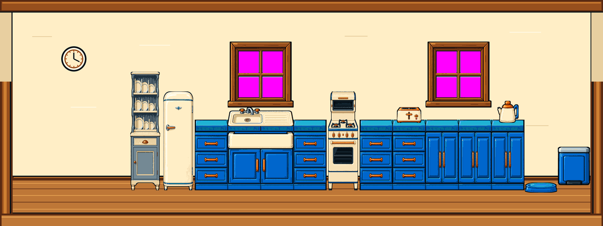
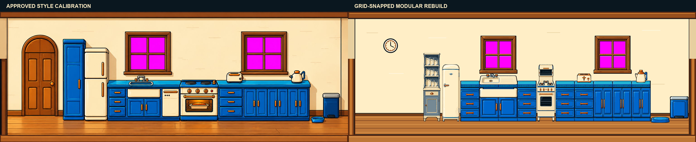
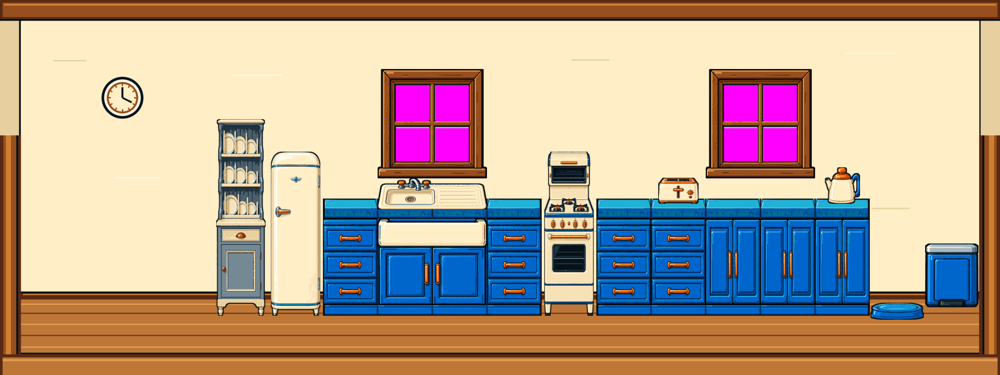
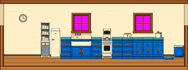
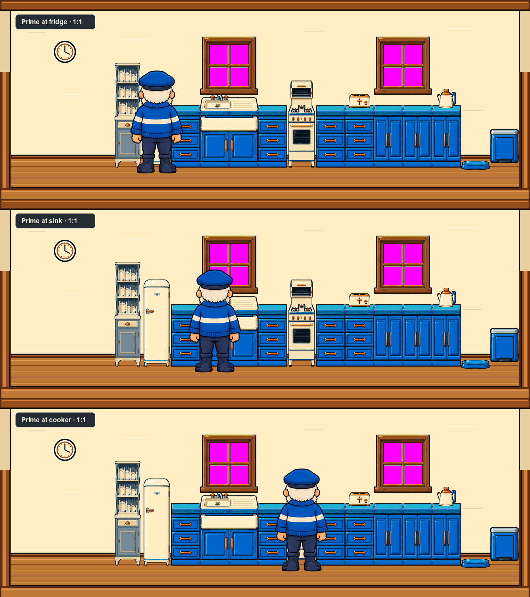
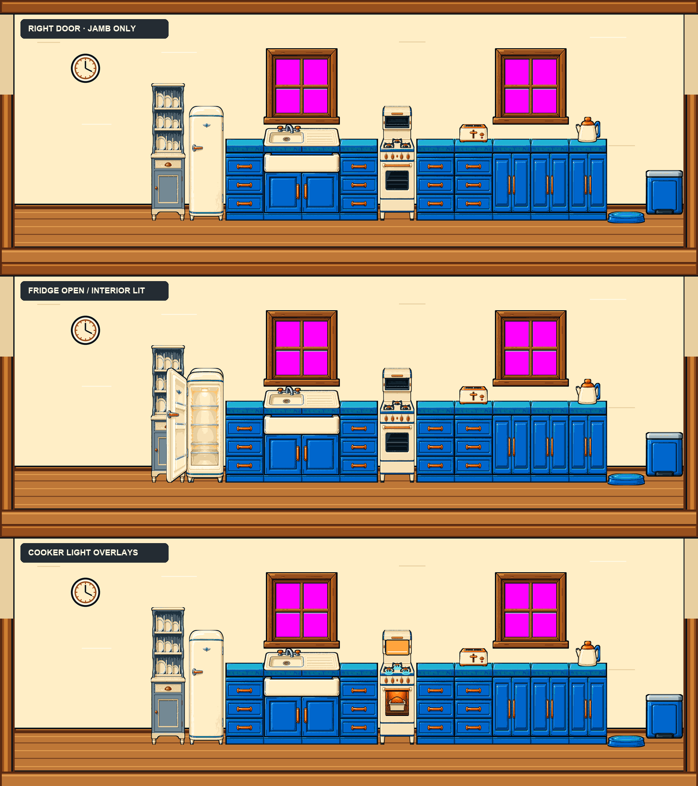
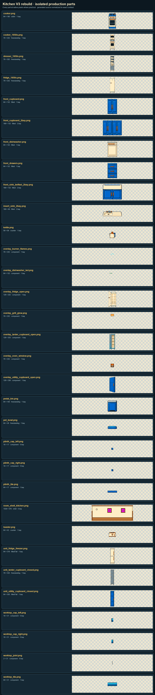

Native room view · 1536 × 576

Approved calibration vs modular rebuild

2× nearest

Tower scale · 1/4

Prime Keeper · unchanged 1:1

Right jamb, moving state and light overlays

Every isolated part

Mechanical gates
| Exact key | 21,624 #FF00FF pixels; zero near-magenta |
|---|---|
| Window exclusion | zero item pixels above y=274 |
| Run geometry | continuous opaque tiles; declared joints only |
| Cooker alignment | hob y=305; eye-level grill y=251–291; feet y=485 |
| Amendment | dresser/fridge/cooker active; right jamb exact; utility, larder, dishwasher and fitted predecessors retired |
| Shadow policy | generated exterior halo discarded; detached partial alpha rejected |
| Isolation | 549 changed pixels, all inside the sink insert |